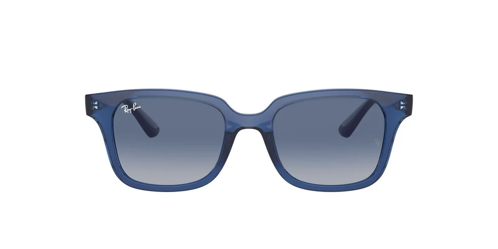

RAY-BAN

RAY-BAN
Junior New Clubmaster Grey - Modelo RJ9116S 7134T3
Promociones aplicadas:
OBTÉN 50% 2DO PAR-
Diseño Clubmaster
Estilo juvenil con una silueta distintiva. -
Montura ligera
Fabricada en material inyectado. -
Lunas polarizadas
Ayudan a reducir los reflejos y cuentan con protección UV.
PRECIO:
S/350
Hasta 12 cuotas sin interés - Valor cuota: S/ 29.17
Acerca de la montura
Detalles de la montura
∧| Característica | Especificación Técnica |
|---|---|
| Modelo | RJ9116S 7134T3 |
| Material | Inyectado (nylon) |
| Forma | Irregular - Clubmaster |
| Color de montura | Azul ópalo translúcido brillante |
| Color de lunas | Gris polarizado |
| Género | Niño |
| Tipo | Lentes de sol |
| Protección | UV - Categoría 3N |
| Características según el modelo oficial de referencia | |
Medidas de la montura
∧| Medida | Dimensión |
|---|---|
| Ancho de la luna | 47 mm |
| Ancho del puente | 17 mm |
| Largo de la varilla | 125 mm |
| Altura de la luna | 40 mm |
| Medidas expresadas en milímetros (mm) | |
Acerca de RAY-BAN
∧
Ray-Ban es una marca reconocida internacionalmente por sus diseños
de gafas. Sus colecciones combinan estilo, personalidad y
funcionalidad. También cuenta con modelos especialmente diseñados
para niños y jóvenes.